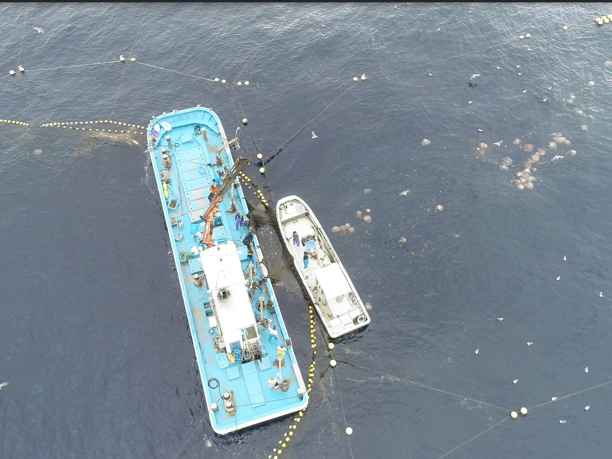
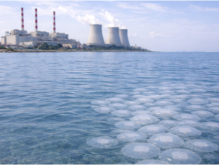
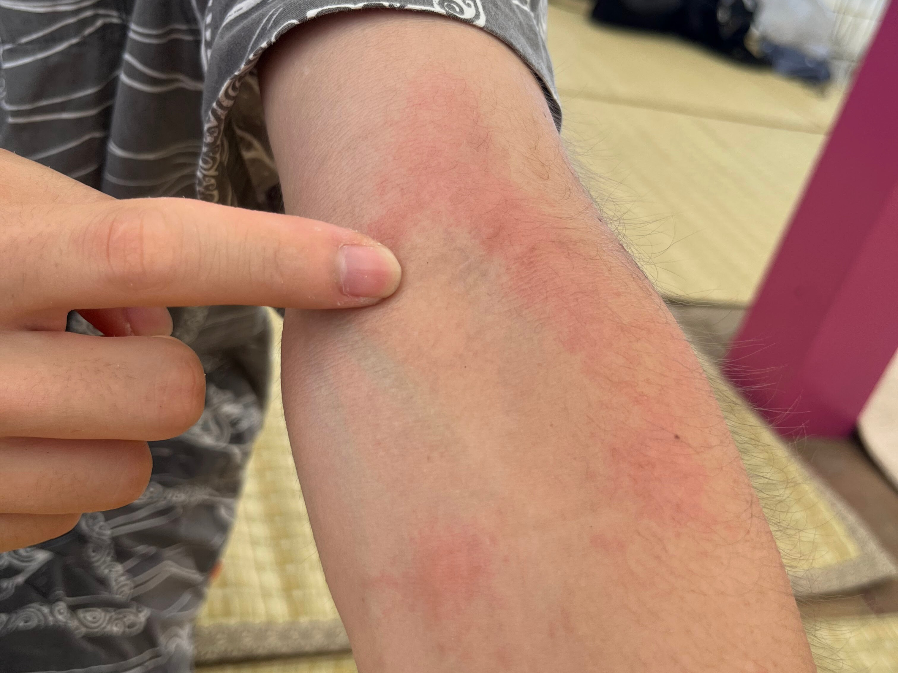
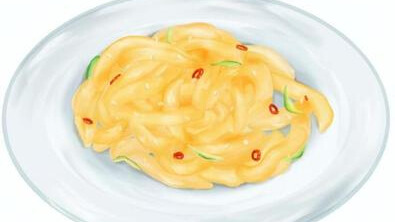
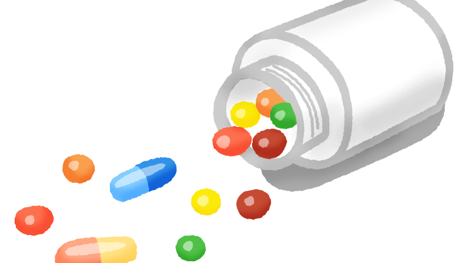

クラゲってどんな生き物？
クラゲの厄介者としての側面と、魅力的な素材としての側面をご紹介します。
クラゲが起こす社会課題
神出鬼没の厄介者
クラゲは、水族館でも人気が急上昇しています。クラゲグッズも大人気です。そんなプラスのイメージとは裏腹に、沿岸産業にとっては厄介者として扱われており、時には数百億円規模のクラゲによる被害が起こることもあります。
以下が、特に代表的な産業被害です。

漁業への被害
クラゲが漁網に入網してしまうと、漁網を破壊してしまったり、粘液や毒で混獲された魚の商品価値を下げてしまったり、多大な経済損失を引き起こします。その規模は時に百億円規模にも上り、クラゲ調査船の航行によるいち早いクラゲの発見や網の改造などの対策が取られています。
これは決して漁業関係者だけの問題ではなく、魚介を食べる私たち消費者にも深く関係のある問題です。
発電所への被害
発電所の取水パイプにクラゲが詰まり、冷却機能に異常が起きて、発電量の減少を引き起こし、時には稼働を止めてしまうことすらあり、対策が求められています。
2025年にはフランスで大規模な被害があり、ある原子力発電所の原子炉の4基中1基が完全に稼働を停止、発電量が例年の半分にまで落ち込みました。
このように、電力などの生活インフラにも、クラゲの大量発生問題は深く関わっているのです。


人体への刺傷被害
多くの人にとって最も身近な被害が、人体への刺傷被害です。海水浴中にチクっとした経験がある人も少なくないでしょう。中には死亡事故につながるクラゲや、その巨大さからビーチを閉鎖に追い込むクラゲもおり、人体や観光業への被害も無視できません。
クラゲが大量発生した年には、全国でこれだけの被害が…
被害総額：300億円規模
廃棄されるクラゲ：数万トン規模
クラゲの処分費用：約10億円
クラゲは沿岸産業にとっては完全な厄介者であり、海産物の供給や電力の供給など私たちの生活にも深く関わっているのですが、果たしてクラゲは厄介者になるために生まれてきたのでしょうか？人間の都合で厄介者になっているのではないでしょうか。
では、クラゲを守るために今すぐにでも人間は発電や漁業をやめるべきでしょうか？
答えはいずれもNO。
私たちの目指す海と人間が持続可能に共生できる世界は、これらの疑問を解消するものです。
過剰な海洋保護や生物保護で人口を支えるだけの産業を止めなくても、必要な営みを続けつつ、衝突を防いで海やそこにいる生き物たちを守り、衝突してしまったものは、切り刻んでゴミにせずに生活を豊かにするものに変えて世の中に送り出していく。
そんな世界の実現を目指して、私たちはこの事業に取り組んでいます。
クラゲの可能性
役に立つクラゲたち
クラゲはその95%以上が水分、残りはコラーゲンなどのタンパク質でできています。その組成から、中国では古来より高級な健康食品として重宝されてきました。現在でも、中国を中心とする東アジア、東南アジアでは食品として人気があります。
加えて、クラゲ由来コラーゲンは、一般的な哺乳類由来のコラーゲンに比べて親水性が高く、牛海綿状脳症などの感染症リスクが低いことが特徴です。このことから、欧米を中心に化粧品や医療への利用を目的とした研究が進んでおり、続々とスタートアップも設立されています。
クラゲは、私たちの生活をより豊かにする可能性を秘めているのです。

食材
中華料理の「クラゲの冷菜」、実は本物のクラゲです。中国では医食同源の考え方のもと、古来よりヘルシーな高級食材として用いられてきました。華僑が渡った東南アジアでも消費文化がある上、日本でもASMRが流行するなど、私たちの生活に馴染み深いものとなっています。中華クラゲだけでなく、新たな洋風のレシピも提案されており(*注1)、くらげクラフトと共に新たな食体験をもたらしてくれることでしょう。
化粧品
クラゲの95%以上は水分でできていますが、残りはコラーゲンを中心とするタンパク質です。近年、クラゲから抽出したコラーゲンの有効性に注目が集まっており、特に化粧品領域においてスタートアップが続々と立ち上がっています。従来の動物由来のコラーゲンに比べて親水性が高く、抗酸化作用や紫外線保護効果が見られるという報告もあります(*注2)。
再生医療
クラゲ由来コラーゲンが線維芽細胞や骨芽細胞の生存・増殖を良好にサポートする(*注3)ことや、創傷治癒の促進が観察された事例(*注4)などが報告されており、再生医療分野への応用の期待が高まっています。哺乳類由来でないことからBSEなどの感染症リスクが低いことも特徴として挙げられます。臨床試験や量の確保などのハードルはあるものの、抽出法などの検討も進められており(*注5)今後の動向に期待ができます。

サプリメント
アメリカで販売されている、クラゲ由来タンパク質のサプリメントが流行しています。記憶力改善を謳い人気を集めていますが、その効果は根拠がなく、有効性に関する宣伝が禁じられたようです。とはいえ依然として人気があり、クラゲ利用の市場の可能性が垣間見えます。本当に有効性のあるクラゲ由来成分のサプリメントが発売される日も近いかもしれません。
*注1：GoJelly European Jellyfish COOKBOOK
*注2：Fan, J., Zhuang, Y., & Li, B. (2013). Effects of collagen and collagen hydrolysate from jellyfish umbrella on histological and immunity changes of mice photoaging. Nutrients, 5(1), 223–233.
*注3：Mearns-Spragg, A., Tilman, J., Tams, D., & Barnes, A. (2020). The biological evaluation of jellyfish collagen as a new research tool for the growth and culture of iPSC derived microglia. Frontiers in Marine Science, 7, Article 689.
*注4：Felician, F. F., Yu, R.-H., Li, M.-Z., Li, C.-J., Chen, H.-Q., Jiang, Y., Tang, T., Qi, W.-Y., & Xu, H.-M. (2019). The wound healing potential of collagen peptides derived from the jellyfish Rhopilema esculentum. Chinese Journal of Traumatology, 22(1), 12–20.
*注5：Hu, B., Zong, Z., Han, L., Cao, J., Yang, J., Zheng, Q., Zhang, X., Liu, Y., & Yao, Z. (2025). Jellyfish collagen: A promising and sustainable marine biomaterial with emerging applications in food, cosmetics, and biomedical — A review. Applied Food Research, 5, 101165.